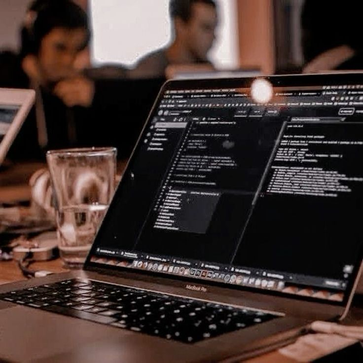

Актуальность и проблематика
Цифровизация образовательного процесса является ключевым аспектом современного развития университетов. В ответ на требования студентов, преподавателей и общества в целом, образовательные учреждения вынуждены адаптироваться и внедрять цифровые технологии, чтобы обеспечить доступность, гибкость и удобство обучения. Современные студенты ожидают возможности онлайн-обучения, доступ к учебным материалам в любое время и с любого устройства. Цифровой университет предполагает трансформацию ключевых процессов вуза через ИТ-сервисы и микросервисные решения, что способствует оптимизации работы и повышению продуктивности. Студенты активно вовлекаются в процесс, что предоставляет им практический опыт и новые идеи для улучшения образовательной среды.
Цели и задачи проекта

Цель проекта: создание и внедрение ИТ-сервисов для
Московского политеха, что повысит продуктивность
студентов и сотрудников и обеспечит более удобное и
эффективное взаимодействие с университетскими сервисами.
Проект состоит из трех подпроектов:
1.Личный кабинет Московского политеха;
2.Мобильное приложение для Личного кабинета;
3.Сервис визуализации данных контакт-центра на базе Grafana.
Задачи по каждому подпроекту: